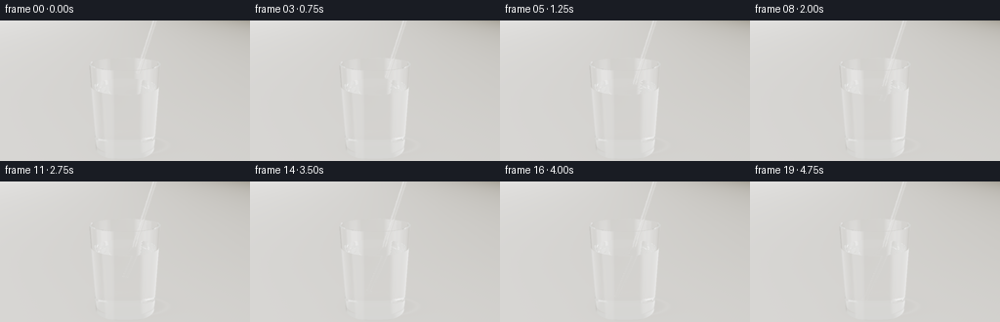
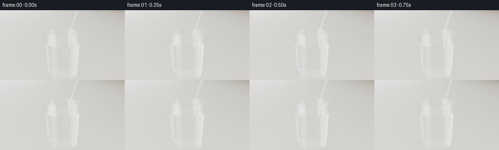
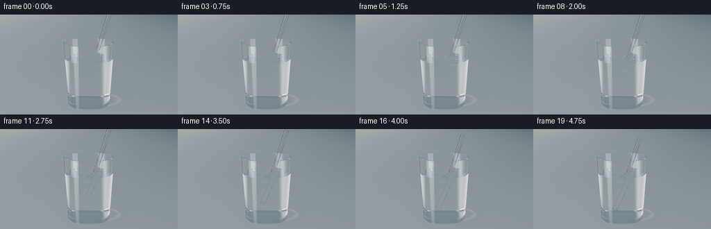
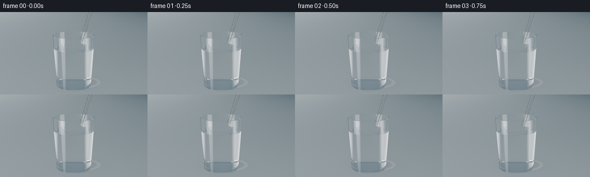
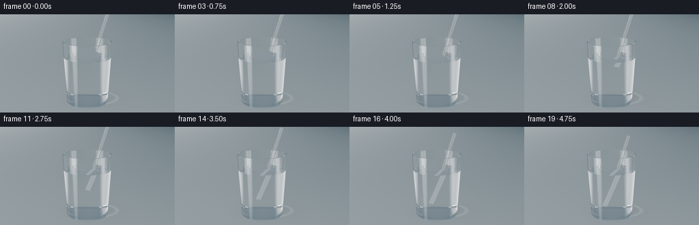
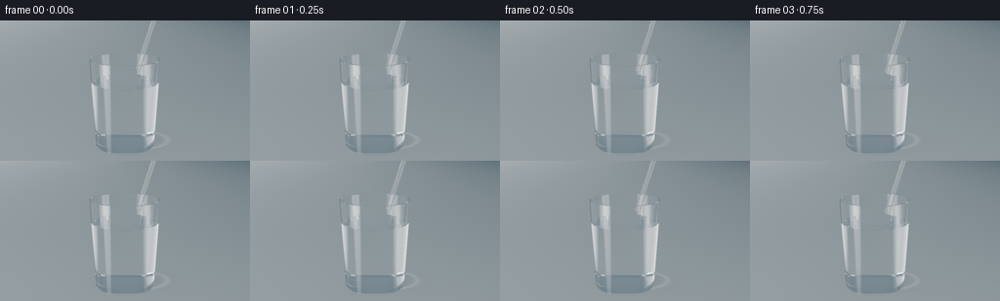

CODING AGENTS AS PIXEL WORLD MODELS
traex/GPT-6.1-Sol · phygen_071
点击播放 · 原生 RGB 像素
逐轮保存的候选
回放视频、检查图与代码变化。
每份候选均可单独播放。实际图片检查记录在下方工具轨迹中。
候选 01播放与检查图
点击播放 · 原生 RGB 像素


展开代码变化
--- 上一保存版本
+++ 本次保存版本
@@ -0,0 +1,253 @@
+"""A deterministic, analytic optical rendering; numpy geometry only."""
+from pathlib import Path
+import json, time
+import numpy as np
+from PIL import Image
+import artifact_io
+
+ROOT=Path(__file__).resolve().parent
+SPEC=json.loads((ROOT/'task_spec.json').read_text())
+W,H=SPEC['width'],SPEC['height']
+SS=3
+WW,HH=W*SS,H*SS
+DT=np.float32
+INF=DT(1e6)
+YTOP=2.22
+YFLOOR=.135
+YWATER=1.66
+RBASE=.77
+SLOPE=.045
+WALL=.043
+NG=1.505
+NP=1.47
+NW=1.333
+AX=np.array([.29,.956,.035],dtype=DT); AX/=np.linalg.norm(AX)
+START=np.array([.315,1.975,.01],dtype=DT)
+RO=.056
+RI=.043
+LENGTH=4.5
+
+
+def normalize(x):
+ return x/np.sqrt(np.maximum((x*x).sum(axis=-1,keepdims=True),1e-16))
+
+
+def camera():
+ cam=np.array([.08,3.65,7.6],dtype=DT)
+ target=np.array([0,1.53,0],dtype=DT)
+ f=normalize(target-cam)
+ right=normalize(np.cross(f,np.array([0,1,0],dtype=DT)))
+ up=np.cross(right,f)
+ yy,xx=np.mgrid[:HH,:WW].astype(DT)
+ # A macro telephoto composition with generous breathing room either side.
+ scale=.223
+ sx=((xx+.5)/WW*2-1)*scale*(W/H)
+ sy=(1-(yy+.5)/HH*2)*scale
+ ray=normalize(f+sx[...,None]*right+sy[...,None]*up).reshape(-1,3)
+ return np.broadcast_to(cam,ray.shape).copy(),ray
+
+
+def environment(p,d,reflection=False):
+ """A softly lit warm studio table, reflected large photographic softboxes."""
+ n=len(p)
+ down=d[:,1]<-.0001
+ t=-p[:,1]/np.where(down,d[:,1],-.0001)
+ hit=p+d*t[:,None]
+ x,z=hit[:,0],hit[:,2]
+ # Slightly textured limestone surface, never a busy backdrop.
+ texture=.0014*np.sin(x*83+z*54)+.0012*np.sin(x*143-z*107)
+ grad=.022*np.tanh((z+1)*.3)-.012*x
+ col=np.stack([.61+grad+texture,.591+grad+texture,.553+grad+texture],axis=1)
+ contact=np.exp(-((x/.77)**2+(z/.66)**2)*2.2)
+ cast=np.exp(-(((x-.30)/1.10)**2+((z+.15)/.80)**2)*1.4)
+ col*= (1-.18*contact-.08*cast)[:,None]
+ # Refracted sunlight through the tumbler gives a restrained curved caustic.
+ ell=np.sqrt(((x-.21)/.93)**2+((z+.14)/.60)**2)
+ caustic=.048*np.exp(-((ell-1)/.085)**2)*np.exp(-((x-.30)/1.7)**2)
+ col+=caustic[:,None]*np.array([1.05,1.04,1.0],dtype=DT)
+ wall=np.stack([.68-.05*d[:,1],.665-.04*d[:,1],.627-.04*d[:,1]],axis=1)
+ col=np.where(down[:,None],col,wall)
+ if reflection:
+ # Broad vertical light on the left and a fine rim light on the right.
+ a=normalize(np.array([-.78,.32,.46],dtype=DT))
+ b=normalize(np.array([.86,.36,.21],dtype=DT))
+ soft=np.exp(-((d[:,0]-a[0])/.26)**8-((d[:,2]-a[2])/.36)**8)*np.exp(-((d[:,1]-.26)/.8)**8)
+ strip=np.exp(-((d[:,0]-b[0])/.10)**4-((d[:,2]-b[2])/.40)**4)*np.exp(-((d[:,1]-.35)/.8)**8)
+ ceiling=np.maximum(d[:,1],0)**9
+ dark=.47*np.exp(-((d[:,0]+.40)/.17)**4-((d[:,2]+.78)/.4)**4)
+ col=col*(1-dark[:,None])+soft[:,None]*2.45+strip[:,None]*1.8+ceiling[:,None]*.50
+ return np.maximum(col,0).astype(DT)
+
+
+def intersect(o,d,bottom,tsec):
+ """Nearest analytic interface of hollow tapered glass, water and hollow tube."""
+ n=len(o)
+ best=np.full(n,INF,dtype=DT)
+ normal=np.zeros((n,3),dtype=DT)
+ inside=np.ones(n,dtype=DT)
+ outside=np.ones(n,dtype=DT)
+ kinds=np.zeros(n,dtype=np.int8)
+ eps=2e-5
+ def commit(t,norm,ni,no,kind,valid):
+ nonlocal best,normal,inside,outside,kinds
+ take=valid & (t>eps) & (t<best)
+ if not np.any(take): return
+ best[take]=t[take]
+ if np.ndim(norm)==1: normal[take]=norm
+ else: normal[take]=norm[take]
+ if np.ndim(ni)==0: inside[take]=ni
+ else: inside[take]=ni[take]
+ if np.ndim(no)==0: outside[take]=no
+ else: outside[take]=no[take]
+ kinds[take]=kind
+ # Outer and inner conical glass walls.
+ for inset,lower,sign in [(0.,0.,1.),(WALL,YFLOOR,-1.)]:
+ r0=RBASE-inset+SLOPE*o[:,1]
+ k=SLOPE*d[:,1]
+ a=d[:,0]**2+d[:,2]**2-k*k
+ b=2*(o[:,0]*d[:,0]+o[:,2]*d[:,2]-r0*k)
+ c=o[:,0]**2+o[:,2]**2-r0*r0
+ disc=b*b-4*a*c
+ root=np.sqrt(np.maximum(disc,0))
+ for ts in [(-b-root)/(2*a+1e-25),(-b+root)/(2*a+1e-25)]:
+ q=o+d*ts[:,None]
+ nr=normalize(np.stack([q[:,0],-SLOPE*(RBASE-inset+SLOPE*q[:,1]),q[:,2]],axis=1))*sign
+ other=np.where(q[:,1]<YWATER,NW,1.) if inset else 1.
+ commit(ts,nr,NG,other,1,(disc>=0)&(q[:,1]>=lower)&(q[:,1]<=YTOP))
+ # Three flat polished glass faces: bottom, internal floor and the lip.
+ for yy,sgn in [(0.,-1.),(YFLOOR,1.),(YTOP,1.)]:
+ tt=(yy-o[:,1])/np.where(np.abs(d[:,1])>1e-12,d[:,1],1e-12)
+ q=o+d*tt[:,None]
+ rr=q[:,0]**2+q[:,2]**2
+ rout=RBASE+SLOPE*yy
+ rin=rout-WALL
+ if yy==0: valid=rr<=rout*rout; other=1.
+ elif yy==YFLOOR: valid=rr<=rin*rin; other=NW
+ else: valid=(rr<=rout*rout)&(rr>=rin*rin); other=1.
+ commit(tt,np.array([0,sgn,0],dtype=DT),NG,other,1,valid)
+ # Water-air interface; radial damped waves at the insertion site.
+ tt=(YWATER-o[:,1])/np.where(np.abs(d[:,1])>1e-12,d[:,1],1e-12)
+ q=o+d*tt[:,None]
+ r2=q[:,0]**2+q[:,2]**2
+ radius=RBASE+SLOPE*YWATER-WALL
+ cross=START+AX*((YWATER-START[1])/AX[1])
+ delta=q-cross
+ rr=np.sqrt(delta[:,0]**2+delta[:,2]**2+1e-8)
+ elapsed=max(0.,tsec-.65)
+ amp=.0075*(1-np.exp(-elapsed*3))*np.exp(-elapsed*.7)
+ phase=28*rr-8*elapsed
+ radial=amp*(28*np.cos(phase)-2.5*np.sin(phase))*np.exp(-rr*2.5)
+ radial*=np.exp(-((rr-.20-elapsed*.14)/.44)**2)
+ # Surface tension climbing the transparent wall.
+ edge=np.sqrt(r2+1e-8)
+ meniscus=.050*np.exp(-(radius-edge)/.035)
+ norm=normalize(np.stack([-radial*delta[:,0]/rr-meniscus*q[:,0]/edge,np.ones(n,dtype=DT),-radial*delta[:,2]/rr-meniscus*q[:,2]/edge],axis=1))
+ # Exclude the plastic wall's small annulus from the water interface.
+ v=q-bottom
+ longitudinal=v@AX
+ perp=v-longitudinal[:,None]*AX
+ tube_r2=(perp*perp).sum(axis=1)
+ plastic=(longitudinal>=0)&(longitudinal<=LENGTH)&(tube_r2<RO*RO)&(tube_r2>RI*RI)
+ commit(tt,norm,NW,1.,2,(r2<radius*radius)&(~plastic))
+ # Transparent extruded plastic cylinder, including its hollow bore.
+ ov=o-bottom
+ od=ov@AX
+ dd=d@AX
+ op=ov-od[:,None]*AX
+ dp=d-dd[:,None]*AX
+ a=(dp*dp).sum(axis=1)
+ b=2*(op*dp).sum(axis=1)
+ for radius,sgn in [(RO,1.),(RI,-1.)]:
+ c=(op*op).sum(axis=1)-radius*radius
+ disc=b*b-4*a*c
+ root=np.sqrt(np.maximum(disc,0))
+ for tt in [(-b-root)/(2*a+1e-25),(-b+root)/(2*a+1e-25)]:
+ q=o+d*tt[:,None]
+ lng=od+dd*tt
+ nr=normalize(op+dp*tt[:,None])*sgn
+ medium=np.where(q[:,1]<YWATER,NW,1.)
+ commit(tt,nr,NP,medium,3,(disc>=0)&(lng>=0)&(lng<=LENGTH))
+ for end,sgn in [(0.,-1.),(LENGTH,1.)]:
+ tt=(end-od)/np.where(np.abs(dd)>1e-12,dd,1e-12)
+ q=o+d*tt[:,None]
+ perp=op+dp*tt[:,None]
+ rr=(perp*perp).sum(axis=1)
+ commit(tt,AX*sgn,NP,np.where(q[:,1]<YWATER,NW,1.),3,(rr<=RO*RO)&(rr>=RI*RI))
+ return best,normal,inside,outside,kinds
+
+
+def render(frame):
+ tsec=frame/SPEC['fps']
+ # Smooth monotone insertion, only the first tip descends through the surface.
+ u=frame/(SPEC['frames']-1)
+ progress=.5-.5*np.cos(np.pi*u)
+ bottom=START-AX*(1.74*progress)
+ o,d=camera()
+ n=len(o)
+ color=np.zeros((n,3),dtype=DT)
+ throughput=np.ones((n,3),dtype=DT)
+ medium=np.ones(n,dtype=DT)
+ indices=np.arange(n)
+ for bounce in range(22):
+ if len(indices)==0: break
+ dist,norm,ni,no,kind=intersect(o,d,bottom,tsec)
+ miss=dist>1e5
+ if np.any(miss):
+ color[indices[miss]]+=throughput[miss]*environment(o[miss],d[miss])
+ hit=~miss
+ if not np.any(hit): break
+ indices=indices[hit]; o=o[hit]; d=d[hit]; throughput=throughput[hit]; medium=medium[hit]
+ dist=dist[hit]; norm=norm[hit]; ni=ni[hit]; no=no[hit]; kind=kind[hit]
+ # Beer's law, weak enough to keep the water crystal clear.
+ glass=np.abs(medium-NG)<.004
+ plastic=np.abs(medium-NP)<.004
+ water=np.abs(medium-NW)<.004
+ absorb=glass[:,None]*np.array([.018,.007,.004],dtype=DT)+plastic[:,None]*np.array([.025,.013,.008],dtype=DT)+water[:,None]*np.array([.0015,.0005,.0003],dtype=DT)
+ throughput*=np.exp(-absorb*dist[:,None])
+ point=o+d*dist[:,None]
+ dot=(d*norm).sum(axis=1)
+ entering=dot<0
+ n1=np.where(entering,no,ni)
+ n2=np.where(entering,ni,no)
+ facing=np.where(entering[:,None],norm,-norm)
+ cosi=np.clip(-(d*facing).sum(axis=1),0,1)
+ eta=n1/n2
+ k=1-eta*eta*(1-cosi*cosi)
+ tir=k<0
+ cost=np.sqrt(np.maximum(k,0))
+ rs=((n1*cosi-n2*cost)/(n1*cosi+n2*cost+1e-12))**2
+ rp=((n1*cost-n2*cosi)/(n1*cost+n2*cosi+1e-12))**2
+ fresnel=np.clip((rs+rp)*.5,0,1)
+ refl=normalize(d+2*cosi[:,None]*facing)
+ # One environment lighting estimate for each reflected interface.
+ reflected=environment(point+refl*1e-4,refl,True)
+ # Water reflections are calm, with clean small highlights at ripple crests.
+ color[indices]+=throughput*(fresnel*(~tir))[:,None]*reflected
+ throughput*=np.where(tir,1.,1-fresnel)[:,None]
+ refr=normalize(eta[:,None]*d+(eta*cosi-cost)[:,None]*facing)
+ d=np.where(tir[:,None],refl,refr)
+ medium=np.where(tir,n1,n2)
+ o=point+d*8e-5
+ keep=np.max(throughput,axis=1)>.001
+ indices=indices[keep]; o=o[keep]; d=d[keep]; throughput=throughput[keep]; medium=medium[keep]
+ if len(indices): color[indices]+=throughput*environment(o,d,True)
+ # Photographic exposure and restrained tone roll-off, then standard RGB.
+ color=np.maximum(color,0)*.94
+ color=(color*(2.51*color+.03))/(color*(2.43*color+.59)+.14)
+ color=np.clip(color,0,1)
+ color=np.where(color<.0031308,12.92*color,1.055*color**(1/2.4)-.055)
+ im=Image.fromarray((color.reshape(HH,WW,3)*255+.5).astype(np.uint8))
+ im=im.resize((W,H),Image.Resampling.LANCZOS)
+ return np.array(im)
+
+
+def main():
+ frames=[]
+ for i in range(SPEC['frames']):
+ now=time.time()
+ frames.append(render(i))
+ print(f'Frame {i+1}/{SPEC["frames"]}: {time.time()-now:.1f}s',flush=True)
+ artifact_io.save(np.stack(frames),ROOT)
+ print('Saved RGB sequence and player.',flush=True)
+
+if __name__=='__main__': main()
候选 02播放与检查图
点击播放 · 原生 RGB 像素
展开代码变化
--- 上一保存版本
+++ 本次保存版本
@@ -23,8 +23,8 @@
NW=1.333
AX=np.array([.29,.956,.035],dtype=DT); AX/=np.linalg.norm(AX)
START=np.array([.315,1.975,.01],dtype=DT)
-RO=.056
-RI=.043
+RO=.070
+RI=.054
LENGTH=4.5
@@ -40,7 +40,7 @@
up=np.cross(right,f)
yy,xx=np.mgrid[:HH,:WW].astype(DT)
# A macro telephoto composition with generous breathing room either side.
- scale=.223
+ scale=.204
sx=((xx+.5)/WW*2-1)*scale*(W/H)
sy=(1-(yy+.5)/HH*2)*scale
ray=normalize(f+sx[...,None]*right+sy[...,None]*up).reshape(-1,3)
@@ -56,8 +56,8 @@
x,z=hit[:,0],hit[:,2]
# Slightly textured limestone surface, never a busy backdrop.
texture=.0014*np.sin(x*83+z*54)+.0012*np.sin(x*143-z*107)
- grad=.022*np.tanh((z+1)*.3)-.012*x
- col=np.stack([.61+grad+texture,.591+grad+texture,.553+grad+texture],axis=1)
+ grad=.012*np.tanh((z+1)*.3)-.004*x
+ col=np.stack([.195+grad+texture,.225+grad+texture,.240+grad+texture],axis=1)
contact=np.exp(-((x/.77)**2+(z/.66)**2)*2.2)
cast=np.exp(-(((x-.30)/1.10)**2+((z+.15)/.80)**2)*1.4)
col*= (1-.18*contact-.08*cast)[:,None]
@@ -65,7 +65,8 @@
ell=np.sqrt(((x-.21)/.93)**2+((z+.14)/.60)**2)
caustic=.048*np.exp(-((ell-1)/.085)**2)*np.exp(-((x-.30)/1.7)**2)
col+=caustic[:,None]*np.array([1.05,1.04,1.0],dtype=DT)
- wall=np.stack([.68-.05*d[:,1],.665-.04*d[:,1],.627-.04*d[:,1]],axis=1)
+ halo=.052*np.exp(-((d[:,0]+.04)/.32)**2-((d[:,1]+.15)/.5)**2)
+ wall=np.stack([.13+halo,.164+halo,.187+halo],axis=1)
col=np.where(down[:,None],col,wall)
if reflection:
# Broad vertical light on the left and a fine rim light on the right.
@@ -75,7 +76,7 @@
strip=np.exp(-((d[:,0]-b[0])/.10)**4-((d[:,2]-b[2])/.40)**4)*np.exp(-((d[:,1]-.35)/.8)**8)
ceiling=np.maximum(d[:,1],0)**9
dark=.47*np.exp(-((d[:,0]+.40)/.17)**4-((d[:,2]+.78)/.4)**4)
- col=col*(1-dark[:,None])+soft[:,None]*2.45+strip[:,None]*1.8+ceiling[:,None]*.50
+ col=col*(1-dark[:,None])+soft[:,None]*4.7+strip[:,None]*3.8+ceiling[:,None]*.50
return np.maximum(col,0).astype(DT)
@@ -140,7 +141,7 @@
radial*=np.exp(-((rr-.20-elapsed*.14)/.44)**2)
# Surface tension climbing the transparent wall.
edge=np.sqrt(r2+1e-8)
- meniscus=.050*np.exp(-(radius-edge)/.035)
+ meniscus=.050*np.exp(np.clip(-(radius-edge)/.035,-60,0))
norm=normalize(np.stack([-radial*delta[:,0]/rr-meniscus*q[:,0]/edge,np.ones(n,dtype=DT),-radial*delta[:,2]/rr-meniscus*q[:,2]/edge],axis=1))
# Exclude the plastic wall's small annulus from the water interface.
v=q-bottom
候选 03播放与检查图
候选 04播放与检查图
点击播放 · 原生 RGB 像素


展开代码变化
--- 上一保存版本
+++ 本次保存版本
@@ -25,7 +25,7 @@
START=np.array([.315,1.975,.01],dtype=DT)
RO=.070
RI=.054
-LENGTH=4.5
+LENGTH=2.65
def normalize(x):
@@ -34,13 +34,13 @@
def camera():
cam=np.array([.08,3.65,7.6],dtype=DT)
- target=np.array([0,1.53,0],dtype=DT)
+ target=np.array([0,1.41,0],dtype=DT)
f=normalize(target-cam)
right=normalize(np.cross(f,np.array([0,1,0],dtype=DT)))
up=np.cross(right,f)
yy,xx=np.mgrid[:HH,:WW].astype(DT)
# A macro telephoto composition with generous breathing room either side.
- scale=.204
+ scale=.224
sx=((xx+.5)/WW*2-1)*scale*(W/H)
sy=(1-(yy+.5)/HH*2)*scale
ray=normalize(f+sx[...,None]*right+sy[...,None]*up).reshape(-1,3)
@@ -72,11 +72,11 @@
# Broad vertical light on the left and a fine rim light on the right.
a=normalize(np.array([-.78,.32,.46],dtype=DT))
b=normalize(np.array([.86,.36,.21],dtype=DT))
- soft=np.exp(-((d[:,0]-a[0])/.26)**8-((d[:,2]-a[2])/.36)**8)*np.exp(-((d[:,1]-.26)/.8)**8)
- strip=np.exp(-((d[:,0]-b[0])/.10)**4-((d[:,2]-b[2])/.40)**4)*np.exp(-((d[:,1]-.35)/.8)**8)
+ soft=np.exp(-((d[:,0]-a[0])/.12)**8-((d[:,2]-a[2])/.24)**8)*np.exp(-((d[:,1]-.26)/.8)**8)
+ strip=np.exp(-((d[:,0]-b[0])/.052)**4-((d[:,2]-b[2])/.40)**4)*np.exp(-((d[:,1]-.35)/.8)**8)
ceiling=np.maximum(d[:,1],0)**9
dark=.47*np.exp(-((d[:,0]+.40)/.17)**4-((d[:,2]+.78)/.4)**4)
- col=col*(1-dark[:,None])+soft[:,None]*4.7+strip[:,None]*3.8+ceiling[:,None]*.50
+ col=col*(1-dark[:,None])+soft[:,None]*2.6+strip[:,None]*2.7+ceiling[:,None]*.50
return np.maximum(col,0).astype(DT)
@@ -223,6 +223,12 @@
# One environment lighting estimate for each reflected interface.
reflected=environment(point+refl*1e-4,refl,True)
# Water reflections are calm, with clean small highlights at ripple crests.
+ # Tiny material glints distinguish the submerged transparent tube;
+ # its bulk remains transmissive. Contrast comes from a dark studio card.
+ is_tube=kind==3
+ tube_dark=np.exp(-((refl[:,0]-.0)/.95)**4)*.035
+ reflected=np.where(is_tube[:,None], reflected*.23+tube_dark[:,None], reflected)
+ fresnel=np.where(is_tube, np.minimum(.92,fresnel*1.6+.014*(1-cosi)**2),fresnel)
color[indices]+=throughput*(fresnel*(~tir))[:,None]*reflected
throughput*=np.where(tir,1.,1-fresnel)[:,None]
refr=normalize(eta[:,None]*d+(eta*cosi-cost)[:,None]*facing)
候选 05播放与检查图
点击播放 · 原生 RGB 像素


展开代码变化
--- 上一保存版本
+++ 本次保存版本
@@ -230,6 +230,11 @@
reflected=np.where(is_tube[:,None], reflected*.23+tube_dark[:,None], reflected)
fresnel=np.where(is_tube, np.minimum(.92,fresnel*1.6+.014*(1-cosi)**2),fresnel)
color[indices]+=throughput*(fresnel*(~tir))[:,None]*reflected
+ # Fine edge sparkle from extrusion microstructure. It is strongest
+ # at grazing view angles, preserving the clear interior of the tube.
+ sheen=is_tube*(.012+.085*(1-cosi)**3)*(~tir)
+ color[indices]+=throughput*sheen[:,None]*np.array([1.62,1.75,1.78],dtype=DT)
+ throughput*=(1-sheen)[:,None]
throughput*=np.where(tir,1.,1-fresnel)[:,None]
refr=normalize(eta[:,None]*d+(eta*cosi-cost)[:,None]*facing)
d=np.where(tir[:,None],refl,refr)
可观测工具轨迹
实际执行的命令与返回图片。
命令 1exit 0
/bin/bash -lc 'ls -la; cat prompt.txt; cat GENERATION_RULES.md; cat task_spec.json'
命令 2exit 0
/bin/bash -lc "cat artifact_io.py; python - <<'PY'
import numpy,PIL
print('ready')
PY"命令 3exit 0
/bin/bash -lc "python - <<'PY' import importlib.util for m in ['numba','scipy','imageio','imageio_ffmpeg']: print(m, bool(importlib.util.find_spec(m))) PY"
命令 4exit 0
/bin/bash -lc "cat > generate.py <<'PY'
\"\"\"A deterministic, analytic optical rendering; numpy geometry only.\"\"\"
from pathlib import Path
import json, time
import numpy as np
from PIL import Image
import artifact_io
ROOT=Path(__file__).resolve().parent
SPEC=json.loads((ROOT/'task_spec.json').read_text())
W,H=SPEC['width'],SPEC['height']
SS=3
WW,HH=W*SS,H*SS
DT=np.float32
INF=DT(1e6)
YTOP=2.22
YFLOOR=.135
YWATER=1.66
RBASE=.77
SLOPE=.045
WALL=.043
NG=1.505
NP=1.47
NW=1.333
AX=np.array([.29,.956,.035],dtype=DT); AX/=np.linalg.norm(AX)
START=np.array([.315,1.975,.01],dtype=DT)
RO=.056
RI=.043
LENGTH=4.5
def normalize(x):
return x/np.sqrt(np.maximum((x*x).sum(axis=-1,keepdims=True),1e-16))
def camera():
cam=np.array([.08,3.65,7.6],dtype=DT)
target=np.array([0,1.53,0],dtype=DT)
f=normalize(target-cam)
right=normalize(np.cross(f,np.array([0,1,0],dtype=DT)))
up=np.cross(right,f)
yy,xx=np.mgrid[:HH,:WW].astype(DT)
# A macro telephoto composition with generous breathing room either side.
scale=.223
sx=((xx+.5)/WW*2-1)*scale*(W/H)
sy=(1-(yy+.5)/HH*2)*scale
ray=normalize(f+sx[...,None]*right+sy[...,None]*up).reshape(-1,3)
return np.broadcast_to(cam,ray.shape).copy(),ray
def environment(p,d,reflection=False):
\"\"\"A softly lit warm studio table, reflected large photographic softboxes.\"\"\"
n=len(p)
down=d[:,1]<-.0001
t=-p[:,1]/np.where(down,d[:,1],-.0001)
hit=p+d*t[:,None]
x,z=hit[:,0],hit[:,2]
# Slightly textured limestone surface, never a busy backdrop.
texture=.0014*np.sin(x*83+z*54)+.0012*np.sin(x*143-z*107)
grad=.022*np.tanh((z+1)*.3)-.012*x
col=np.stack([.61+grad+texture,.591+grad+texture,.553+grad+texture],axis=1)
contact=np.exp(-((x/.77)**2+(z/.66)**2)*2.2)
cast=np.exp(-(((x-.30)/1.10)**2+((z+.15)/.80)**2)*1.4)
col*= (1-.18*contact-.08*cast)[:,None]
# Refracted sunlight through the tumbler gives a restrained curved caustic.
ell=np.sqrt(((x-.21)/.93)**2+((z+.14)/.60)**2)
caustic=.048*np.exp(-((ell-1)/.085)**2)*np.exp(-((x-.30)/1.7)**2)
col+=caustic[:,None]*np.array([1.05,1.04,1.0],dtype=DT)
wall=np.stack([.68-.05*d[:,1],.665-.04*d[:,1],.627-.04*d[:,1]],axis=1)
col=np.where(down[:,None],col,wall)
if reflection:
# Broad vertical light on the left and a fine rim light on the right.
a=normalize(np.array([-.78,.32,.46],dtype=DT))
b=normalize(np.array([.86,.36,.21],dtype=DT))
soft=np.exp(-((d[:,0]-a[0])/.26)**8-((d[:,2]-a[2])/.36)**8)*np.exp(-((d[:,1]-.26)/.8)**8)
strip=np.exp(-((d[:,0]-b[0])/.10)**4-((d[:,2]-b[2])/.40)**4)*np.exp(-((d[:,1]-.35)/.8)**8)
ceiling=np.maximum(d[:,1],0)**9
dark=.47*np.exp(-((d[:,0]+.40)/.17)**4-((d[:,2]+.78)/.4)**4)
col=col*(1-dark[:,None])+soft[:,None]*2.45+strip[:,None]*1.8+ceiling[:,None]*.50
return np.maximum(col,0).astype(DT)
def intersect(o,d,bottom,tsec):
\"\"\"Nearest analytic interface of hollow tapered glass, water and hollow tube.\"\"\"
n=len(o)
best=np.full(n,INF,dtype=DT)
normal=np.zeros((n,3),dtype=DT)
inside=np.ones(n,dtype=DT)
outside=np.ones(n,dtype=DT)
kinds=np.zeros(n,dtype=np.int8)
eps=2e-5
def commit(t,norm,ni,no,kind,valid):
nonlocal best,normal,inside,outside,kinds
take=valid & (t>eps) & (t<best)
if not np.any(take): return
best[take]=t[take]
if np.ndim(norm)==1: normal[take]=norm
else: normal[take]=norm[take]
if np.ndim(ni)==0: inside[take]=ni
else: inside[take]=ni[take]
if np.ndim(no)==0: outside[take]=no
else: outside[take]=no[take]
kinds[take]=kind
# Outer and inner conical glass walls.
for inset,lower,sign in [(0.,0.,1.),(WALL,YFLOOR,-1.)]:
r0=RBASE-inset+SLOPE*o[:,1]
k=SLOPE*d[:,1]
a=d[:,0]**2+d[:,2]**2-k*k
b=2*(o[:,0]*d[:,0]+o[:,2]*d[:,2]-r0*k)
c=o[:,0]**2+o[:,2]**2-r0*r0
disc=b*b-4*a*c
root=np.sqrt(np.maximum(disc,0))
for ts in [(-b-root)/(2*a+1e-25),(-b+root)/(2*a+1e-25)]:
q=o+d*ts[:,None]
nr=normalize(np.stack([q[:,0],-SLOPE*(RBASE-inset+SLOPE*q[:,1]),q[:,2]],axis=1))*sign
other=np.where(q[:,1]<YWATER,NW,1.) if inset else 1.
commit(ts,nr,NG,other,1,(disc>=0)&(q[:,1]>=lower)&(q[:,1]<=YTOP))
# Three flat polished glass faces: bottom, internal floor and the lip.
for yy,sgn in [(0.,-1.),(YFLOOR,1.),(YTOP,1.)]:
tt=(yy-o[:,1])/np.where(np.abs(d[:,1])>1e-12,d[:,1],1e-12)
q=o+d*tt[:,None]
rr=q[:,0]**2+q[:,2]**2
rout=RBASE+SLOPE*yy
rin=rout-WALL
if yy==0: valid=rr<=rout*rout; other=1.
elif yy==YFLOOR: valid=rr<=rin*rin; other=NW
else: valid=(rr<=rout*rout)&(rr>=rin*rin); other=1.
commit(tt,np.array([0,sgn,0],dtype=DT),NG,other,1,valid)
# Water-air interface; radial damped waves at the insertion site.
tt=(YWATER-o[:,1])/np.where(np.abs(d[:,1])>1e-12,d[:,1],1e-12)
q=o+d*tt[:,None]
r2=q[:,0]**2+q[:,2]**2
radius=RBASE+SLOPE*YWATER-WALL
cross=START+AX*((YWATER-START[1])/AX[1])
delta=q-cross
rr=np.sqrt(delta[:,0]**2+delta[:,2]**2+1e-8)
elapsed=max(0.,tsec-.65)
amp=.0075*(1-np.exp(-elapsed*3))*np.exp(-elapsed*.7)
phase=28*rr-8*elapsed
radial=amp*(28*np.cos(phase)-2.5*np.sin(phase))*np.exp(-rr*2.5)
radial*=np.exp(-((rr-.20-elapsed*.14)/.44)**2)
# Surface tension climbing the transparent wall.
edge=np.sqrt(r2+1e-8)
meniscus=.050*np.exp(-(radius-edge)/.035)
norm=normalize(np.stack([-radial*delta[:,0]/rr-meniscus*q[:,0]/edge,np.ones(n,dtype=DT),-radial*delta[:,2]/rr-meniscus*q[:,2]/edge],axis=1))
# Exclude the plastic wall's small annulus from the water interface.
v=q-bottom
longitudinal=v@AX
perp=v-longitudinal[:,None]*AX
tube_r2=(perp*perp).sum(axis=1)
plastic=(longitudinal>=0)&(longitudinal<=LENGTH)&(tube_r2<RO*RO)&(tube_r2>RI*RI)
commit(tt,norm,NW,1.,2,(r2<radius*radius)&(~plastic))
# Transparent extruded plastic cylinder, including its hollow bore.
ov=o-bottom
od=ov@AX
dd=d@AX
op=ov-od[:,None]*AX
dp=d-dd[:,None]*AX
a=(dp*dp).sum(axis=1)
b=2*(op*dp).sum(axis=1)
for radius,sgn in [(RO,1.),(RI,-1.)]:
c=(op*op).sum(axis=1)-radius*radius
disc=b*b-4*a*c
root=np.sqrt(np.maximum(disc,0))
for tt in [(-b-root)/(2*a+1e-25),(-b+root)/(2*a+1e-25)]:
q=o+d*tt[:,None]
lng=od+dd*tt
nr=normalize(op+dp*tt[:,None])*sgn
medium=np.where(q[:,1]<YWATER,NW,1.)
commit(tt,nr,NP,medium,3,(disc>=0)&(lng>=0)&(lng<=LENGTH))
for end,sgn in [(0.,-1.),(LENGTH,1.)]:
tt=(end-od)/np.where(np.abs(dd)>1e-12,dd,1e-12)
q=o+d*tt[:,None]
perp=op+dp*tt[:,None]
rr=(perp*perp).sum(axis=1)
commit(tt,AX*sgn,NP,np.where(q[:,1]<YWATER,NW,1.),3,(rr<=RO*RO)&(rr>=RI*RI))
return best,normal,inside,outside,kinds
def render(frame):
tsec=frame/SPEC['fps']
# Smooth monotone insertion, only the first tip descends through the surface.
u=frame/(SPEC['frames']-1)
progress=.5-.5*np.cos(np.pi*u)
bottom=START-AX*(1.74*progress)
o,d=camera()
n=len(o)
color=np.zeros((n,3),dtype=DT)
throughput=np.ones((n,3),dtype=DT)
medium=np.ones(n,dtype=DT)
indices=np.arange(n)
for bounce in range(22):
if len(indices)==0: break
dist,norm,ni,no,kind=intersect(o,d,bottom,tsec)
miss=dist>1e5
if np.any(miss):
color[indices[miss]]+=throughput[miss]*environment(o[miss],d[miss])
hit=~miss
if not np.any(hit): break
indices=indices[hit]; o=o[hit]; d=d[hit]; throughput=throughput[hit]; medium=medium[hit]
dist=dist[hit]; norm=norm[hit]; ni=ni[hit]; no=no[hit]; kind=kind[hit]
# Beer's law, weak enough to keep the water crystal clear.
glass=np.abs(medium-NG)<.004
plastic=np.abs(medium-NP)<.004
water=np.abs(medium-NW)<.004
absorb=glass[:,None]*np.array([.018,.007,.004],dtype=DT)+plastic[:,None]*np.array([.025,.013,.008],dtype=DT)+water[:,None]*np.array([.0015,.0005,.0003],dtype=DT)
throughput*=np.exp(-absorb*dist[:,None])
point=o+d*dist[:,None]
dot=(d*norm).sum(axis=1)
entering=dot<0
n1=np.where(entering,no,ni)
n2=np.where(entering,ni,no)
facing=np.where(entering[:,None],norm,-norm)
cosi=np.clip(-(d*facing).sum(axis=1),0,1)
eta=n1/n2
k=1-eta*eta*(1-cosi*cosi)
tir=k<0
cost=np.sqrt(np.maximum(k,0))
rs=((n1*cosi-n2*cost)/(n1*cosi+n2*cost+1e-12))**2
rp=((n1*cost-n2*cosi)/(n1*cost+n2*cosi+1e-12))**2
fresnel=np.clip((rs+rp)*.5,0,1)
refl=normalize(d+2*cosi[:,None]*facing)
# One environment lighting estimate for each reflected interface.
reflected=environment(point+refl*1e-4,refl,True)
# Water reflections are calm, with clean small highlights at ripple crests.
color[indices]+=throughput*(fresnel*(~tir))[:,None]*reflected
throughput*=np.where(tir,1.,1-fresnel)[:,None]
refr=normalize(eta[:,None]*d+(eta*cosi-cost)[:,None]*facing)
d=np.where(tir[:,None],refl,refr)
medium=np.where(tir,n1,n2)
o=point+d*8e-5
keep=np.max(throughput,axis=1)>.001
indices=indices[keep]; o=o[keep]; d=d[keep]; throughput=throughput[keep]; medium=medium[keep]
if len(indices): color[indices]+=throughput*environment(o,d,True)
# Photographic exposure and restrained tone roll-off, then standard RGB.
color=np.maximum(color,0)*.94
color=(color*(2.51*color+.03))/(color*(2.43*color+.59)+.14)
color=np.clip(color,0,1)
color=np.where(color<.0031308,12.92*color,1.055*color**(1/2.4)-.055)
im=Image.fromarray((color.reshape(HH,WW,3)*255+.5).astype(np.uint8))
im=im.resize((W,H),Image.Resampling.LANCZOS)
return np.array(im)
def main():
frames=[]
for i in range(SPEC['frames']):
now=time.time()
frames.append(render(i))
print(f'Frame {i+1}/{SPEC[\"frames\"]}: {time.time()-now:.1f}s',flush=True)
artifact_io.save(np.stack(frames),ROOT)
print('Saved RGB sequence and player.',flush=True)
if __name__=='__main__': main()
PY
OPENBLAS_NUM_THREADS=1 python generate.py"命令 5exit 0
/bin/bash -lc "python - <<'PY'
import numpy as np
from PIL import Image
for n in [0,10,19]:
a=np.array(Image.open(f'frames/{n:02}.png'))
print(n, a.min(),a.max(),a.mean(),a.std())
# Sparse luminance contrast preview, using only the generated pixels.
a=np.array(Image.open(f'frames/{n:02}.png').resize((96,40)))
a=a.mean(axis=2)
s='@%#*+=-:. '
for row in a:
print(''.join(s[int(np.clip((v-140)/110,0,.999)*len(s))] for v in row))
PY"命令 6exit 0
/bin/bash -lc "python - <<'PY'
p='generate.py'
s=open(p).read().replace('RO=.056','RO=.070').replace('RI=.043','RI=.054').replace('scale=.223','scale=.204')
s=s.replace('grad=.022*np.tanh((z+1)*.3)-.012*x','grad=.012*np.tanh((z+1)*.3)-.004*x')
s=s.replace('col=np.stack([.61+grad+texture,.591+grad+texture,.553+grad+texture],axis=1)','col=np.stack([.195+grad+texture,.225+grad+texture,.240+grad+texture],axis=1)')
s=s.replace('wall=np.stack([.68-.05*d[:,1],.665-.04*d[:,1],.627-.04*d[:,1]],axis=1)','halo=.052*np.exp(-((d[:,0]+.04)/.32)**2-((d[:,1]+.15)/.5)**2)\\n wall=np.stack([.13+halo,.164+halo,.ï¼ï¼ï¼+halo],axis=1)'.replace('.ï¼ï¼ï¼','.187'))
s=s.replace('soft[:,None]*2.45+strip[:,None]*1.8','soft[:,None]*4.7+strip[:,None]*3.8')
s=s.replace('meniscus=.050*np.exp(-(radius-edge)/.035)','meniscus=.050*np.exp(np.clip(-(radius-edge)/.035,-60,0))')
open(p,'w').write(s)
PY
OPENBLAS_NUM_THREADS=1 python generate.py"命令 7exit 0
/bin/bash -lc "python - <<'PY'
import numpy as np
from PIL import Image
for n in [0,19]:
a=np.array(Image.open(f'frames/{n:02}.png'))
print(n,a.min(),a.max(),a.mean(),a.std())
a=np.array(Image.open(f'frames/{n:02}.png').resize((96,48))).mean(axis=2)
s=' .:-=+*#%@'
for row in a: print(''.join(s[int(np.clip((v-105)/120,0,.999)*len(s))] for v in row))
a=np.array(Image.open('frames/00.png')).astype(float);b=np.array(Image.open('frames/19.png')).astype(float)
print('changed pixels',np.count_nonzero(np.max(abs(a-b),axis=2)>5),'max change',abs(a-b).max())
PY"命令 8exit 0
/bin/bash -lc "python - <<'PY'
p='generate.py';s=open(p).read()
s=s.replace('LENGTH=4.5','LENGTH=2.65').replace('target=np.array([0,1.53,0]','target=np.array([0,1.41,0]').replace('scale=.204','scale=.224')
s=s.replace('/.26)**8','/.12)**8').replace('/.36)**8','/.24)**8').replace('/.10)**4','/.052)**4')
s=s.replace('soft[:,None]*4.7+strip[:,None]*3.8','soft[:,None]*2.6+strip[:,None]*2.7')
s=s.replace('color[indices]+=throughput*(fresnel*(~tir))[:,None]*reflected','''# Tiny material glints distinguish the submerged transparent tube;
# its bulk remains transmissive. Contrast comes from a dark studio card.
is_tube=kind==3
tube_dark=np.exp(-((refl[:,0]-.0)/.95)**4)*.035
reflected=np.where(is_tube[:,None], reflected*.23+tube_dark[:,None], reflected)
fresnel=np.where(is_tube, np.minimum(.92,fresnel*1.6+.014*(1-cosi)**2),fresnel)
color[indices]+=throughput*(fresnel*(~tir))[:,None]*reflected''')
open(p,'w').write(s)
PY
OPENBLAS_NUM_THREADS=1 python generate.py"命令 9exit 0
/bin/bash -lc "python - <<'PY'
import numpy as np
from PIL import Image
for n in [0,19]:
a=np.array(Image.open(f'frames/{n:02}.png').resize((96,40))).mean(axis=2)
s=' .:-=+*#%@'
print('frame',n)
for row in a: print(''.join(s[int(np.clip((v-105)/120,0,.999)*len(s))] for v in row))
PY"命令 10exit 0
/bin/bash -lc "python - <<'PY'
p='generate.py';s=open(p).read();s=s.replace('color[indices]+=throughput*(fresnel*(~tir))[:,None]*reflected\\n throughput*=','''color[indices]+=throughput*(fresnel*(~tir))[:,None]*reflected
# Fine edge sparkle from extrusion microstructure. It is strongest
# at grazing view angles, preserving the clear interior of the tube.
sheen=is_tube*(.012+.085*(1-cosi)**3)*(~tir)
color[indices]+=throughput*sheen[:,None]*np.array([1.62,1.75,1.78],dtype=DT)
throughput*=(1-sheen)[:,None]
throughput*=''')
open(p,'w').write(s)
PY
OPENBLAS_NUM_THREADS=1 python generate.py"命令 11exit 0
/bin/bash -lc "python - <<'PY'
import imageio.v2 as iio
import numpy as np
from PIL import Image
from pathlib import Path
frames=np.stack([np.asarray(Image.open(f'frames/{i:02d}.png')) for i in range(20)])
assert frames.shape==(20,144,256,3) and frames.dtype==np.uint8
iio.mimwrite('video.mp4',frames,fps=4,codec='libx264',quality=9,pixelformat='yuv420p',macro_block_size=1)
p=np.load('pixels.npz')['pixels']
assert p.shape==(144,256,20)
print('Verified 20 RGB frames, 256x144 at 4 fps (5 seconds).')
for f in ['generate.py','pixels.npz','index.html','video.mp4']:
print(f,Path(f).stat().st_size)
PY"命令 12exit 0
/bin/bash -lc "python - <<'PY'
p='generate.py';s=open(p).read();s=s.replace('artifact_io.save(np.stack(frames),ROOT)\\n print','''artifact_io.save(np.stack(frames),ROOT)
import imageio.v2 as iio
iio.mimwrite(ROOT/'video.mp4',frames,fps=SPEC['fps'],codec='libx264',
quality=9,pixelformat='yuv420p',macro_block_size=1)
print''');open(p,'w').write(s)
PY"保存候选 5 份；完成命令 12 次；可验证图片返回 0 张。原始 API 响应与完整日志保留在本地。